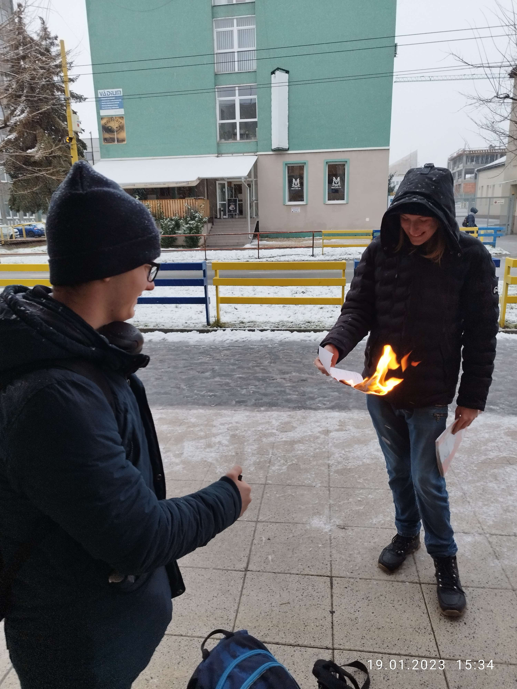
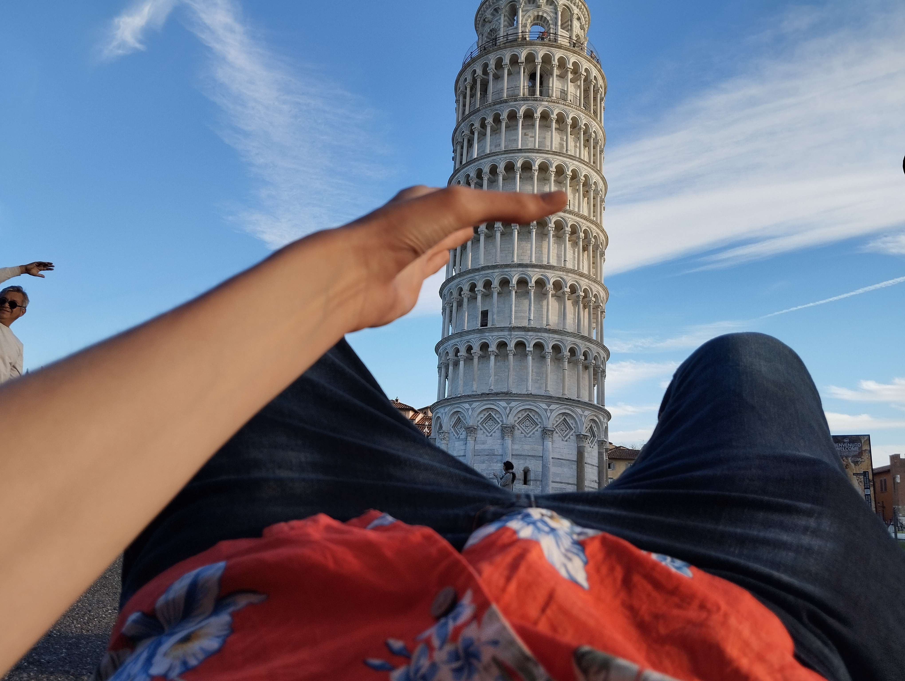
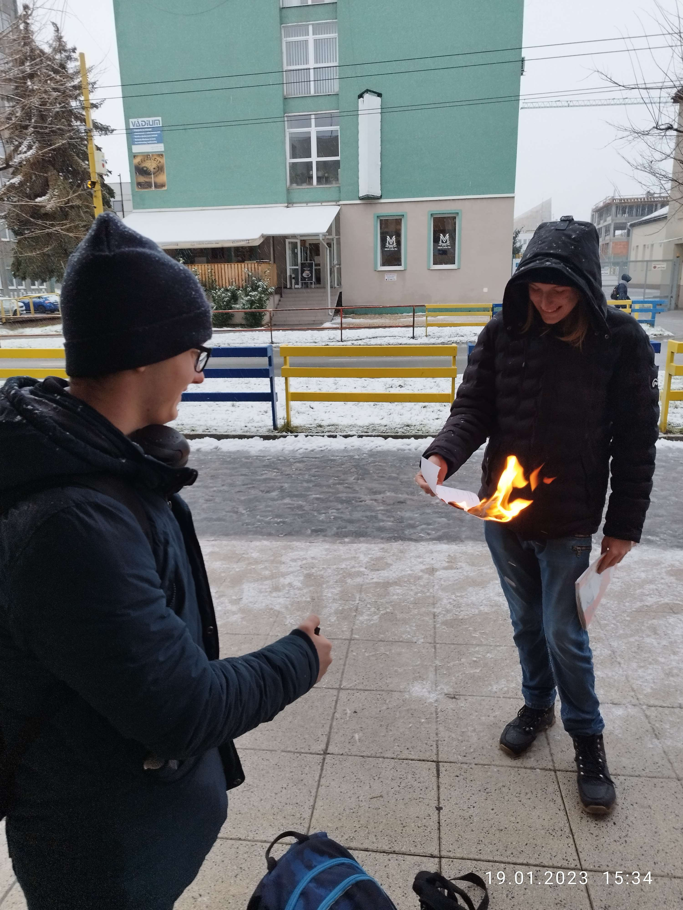
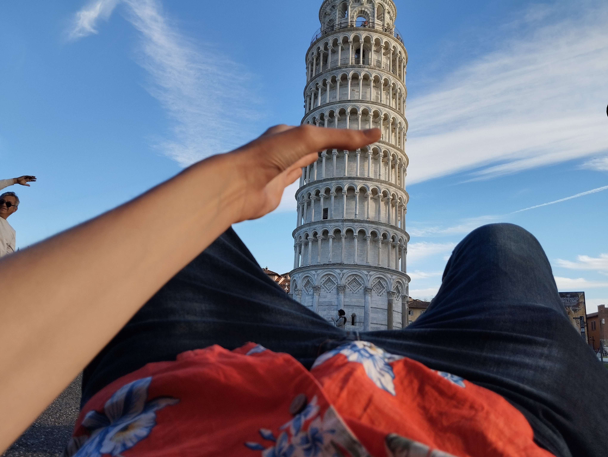

Who am I
My name is Dávid Mrúz, I'm 16 years old, and as many of you already know (because someone always has something to say about it), I live in Radatice.
My wonderful personality
This was probably the hardest part of making this page. Maybe because I don't really like to talk about myself since I feel there isn't much to say about me. Anyways, from those things I am able to say there is for example the fact that I try to take things as they come and not let unnecessary things bother me, oh and also I'm up for any silliness. Another thing to mention, which may be quite a good one, or maybe not, well, depends on the situation, is that I try to perfect the things that interest me to the smallest details but on the other hand, when something doesn't interest me that much, I can't be bothered to waste my time on it. Regarding my relationship with people, I enjoy company, but sometimes I also need some time for myself to recharge my social battery. Additionally, I think I can very well adapt to new knowledge and experiences, make logical connections, and have a great orientation in space. I hope these skills will help me in my future, which I've described a bit more in the section about my interests.
 


